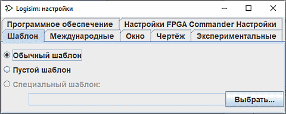

Вкладка «Шаблон»

Шаблон — это файл проекта Logisim, который используется в качестве отправной точки при создании каждого нового проекта. Кроме того, если настройки окружения в открытом проекте повреждены или нежелательно изменены, вы можете сбросить их к настройкам по умолчанию. Для этого нажмите кнопку Сбросить все настройки в окне настроек проекта: | Проект |→| Параметры... |→ вкладка | Сброс настроек |.
Шаблоны особенно удобны при обучении. Преподаватель может создать и предоставить учащимся файл-шаблон с нужными начальными параметрами. Это особенно актуально, если в курсе активно используются сложные или специфические функции программы, для которых базовые настройки Logisim-evolution по умолчанию могут оказаться недостаточными. Шаблон также позволяет быстро стандартизировать среду, когда преподаватель открывает файл, присланный студентом, у которого настройки среды сильно отличаются от стандартных.
По умолчанию выбран вариант Обычный шаблон, при котором используется стандартный встроенный шаблон Logisim-evolution. Если вам нужна минимальная конфигурация без предустановок, выберите Пустой шаблон. Чтобы задать собственный файл в качестве шаблона, нажмите кнопку Выбрать... и укажите путь к файлу, после чего выберите пункт Специальный шаблон.
Опция Удалять неиспользуемые библиотеки при сохранении позволяет уменьшить размер файла проекта. При её включении Logisim-evolution записывает в сохраняемый файл только те библиотеки, компоненты из которых действительно используются в схемах, вынесены на панель быстрого доступа или привязаны к кнопкам мыши. Библиотека Базовые (Base) сохраняется всегда. Исключённые при сохранении встроенные библиотеки можно будет легко подключить снова в любой момент; внешние же библиотеки (JAR или другие проекты) при необходимости их использования придётся импортировать заново.
Также выбрать шаблон можно при запуске программы из командной строки с помощью параметра: -template [путь_к_файлу_шаблона].
Далее: Вкладка «Язык».